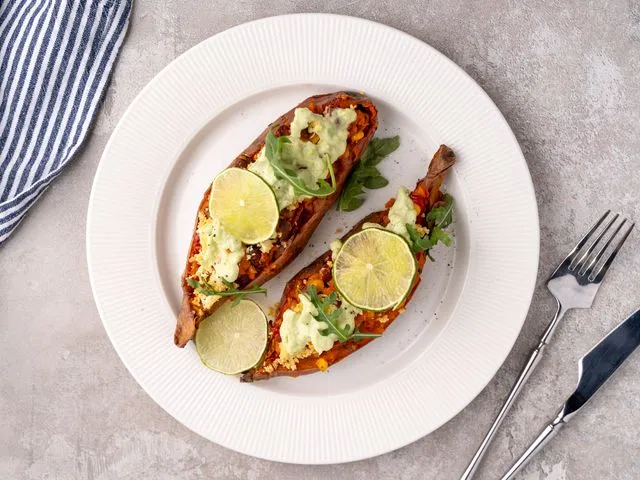

Описание
Запечённый сладкий батат с небольшим количеством приправ сам по себе будет сытным и вкусным вегетарианским блюдом. А если его ещё и нафаршировать обжаренными пикантными овощами с питательными фасолью и кукурузой, к такому обеду или ужину больше ничего не понадобится.
Добавьте в начинку немного сыра тофу и приготовьте лёгкий соус из авокадо, лимонного сока и чеснока для полноты вкуса.
Ингредиенты
- Батат — 3 шт. (240 г)
- Оливковое масло — 1 ст. л.
- Красный лук — 0,25 шт.
- Чеснок — 2 зубчика
- Красный болгарский перец — 0,5 шт.
- Консервированная красная фасоль — 100 г
- Консервированная кукуруза — 90 г
- Соус сальса — 2 ст. л.
- Соль, чёрный перец, чили
- Тофу — 70 г
- Авокадо — 0,5 шт. (для соуса)
- Лимон — 0,25 шт. (для соуса)
- Кокосовые сливки — 1 ч. л. (для соуса)
Приготовление
1
Запекание батата. Проткните клубни батата вилкой в нескольких местах. Разложите на противне и запекайте в духовке при 220°C в течение 40-50 минут до мягкости. Также можно запечь в микроволновке — 10 минут на максимальной мощности, завернув в тканевое полотенце.
2
Подготовка овощей. Нарежьте лук кубиками 5-6 мм, болгарский перец — узкими полосками 1,5-2 см. Чеснок измельчите. Натрите сыр тофу.
3
Обжарка. Разогрейте 0,5 ст. л. масла на сковороде. Обжарьте лук и перец 3-5 минут до золотистой корочки. Добавьте чеснок, соль, чёрный перец и чили. Прогрейте ещё 1 минуту и снимите с огня.
4
Подготовка лодочек. Остудите запечённый батат 5 минут, разрежьте пополам и аккуратно извлеките мякоть ложкой. Разомните мякоть вилкой, добавьте обжаренные овощи, фасоль, кукурузу и соус сальса. Хорошо перемешайте.
5
Фаршировка и запекание. Смажьте половинки маслом, распределите начинку, посыпьте тёртым тофу. Запекайте 7-10 минут, пока сыр не расплавится.
6
Соус из авокадо. Выжмите сок из ¼ лимона. Разомните половину авокадо вилкой, добавьте лимонный сок, измельчённый чеснок, соль, перец и кокосовые сливки. Разложите по 1-2 ч. л. соуса на каждую половинку. Украсьте ломтиками лайма и руколой.